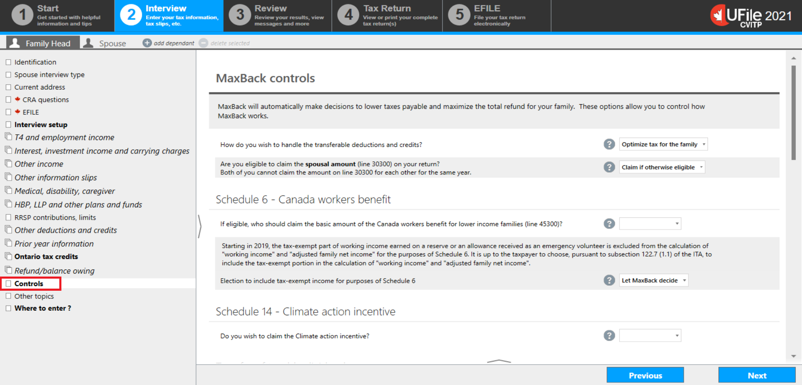
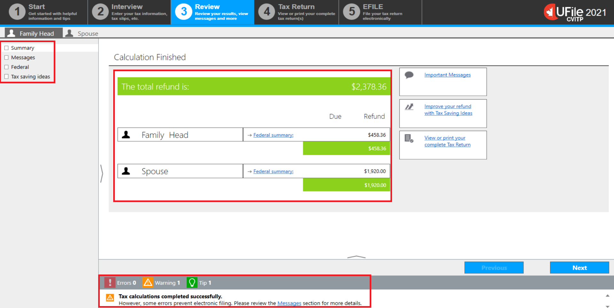
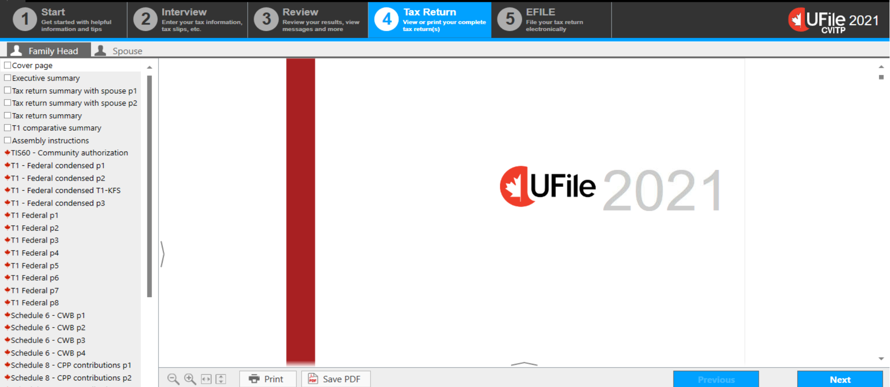
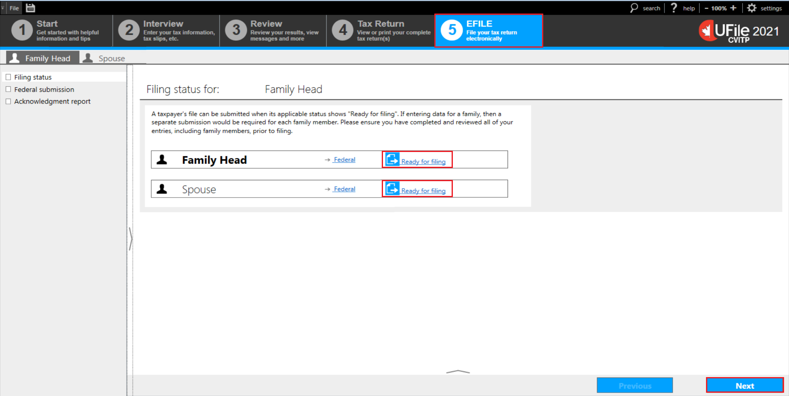
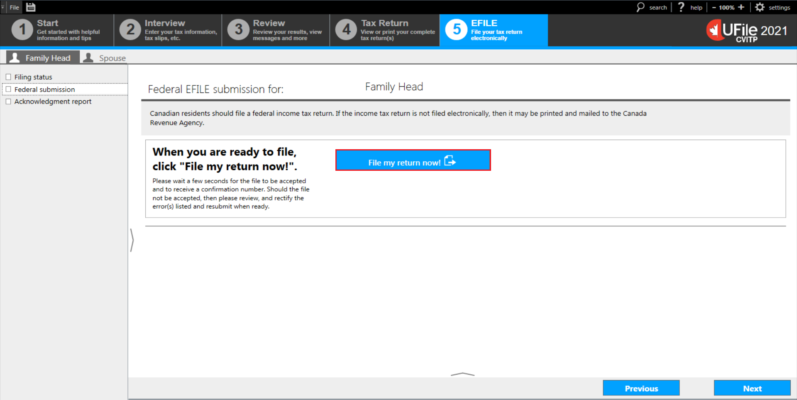
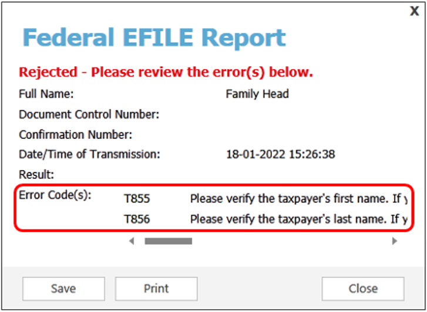

Reviewing and submitting the tax return
On this page
- Controls – MaxBack
- Review of results and calculations
- Finalizing the tax return
- EFILING the tax return
Controls - MaxBack
Text version
UFile screen
Under Interview tab
Family Head sub-tab
Controls topic is highlighted
MaxBack controls examines your entries for possible credits, deductions, or transferable amounts and considers all opportunities to lower the individual’s tax payable or maximize their refund.
MaxBack will automatically make decisions that are beneficial to the individual or family and also checks that the data is accurate and complete. When the data is not accurate or complete, it also provides easy-to-understand warnings and notes for possible discrepancies or tax savings that may have been missed.
Important note
All applicable tax rules are built into the software.
Review of results and calculations
Text version
UFile screen
Under Review tab
Family Head sub-tab
Calculation Finished page is highlighted
Summary, Messages, Federal, and Tax saving ideas topics are highlighted
Tax calculations completed successfully is highlighted
The Review tab, found on the top menu bar, provides a summary of the information entered.
On the Calculation Finished page, UFile will display the family’s total result, followed by a breakdown of each family member’s individual results.
The left-side menu will display a number of options:
- Summary (the screen shown now) will display either the total refund (highlighted in green) or the total amount owed (highlighted in orange)
- Messages will display Errors, Warnings, and Tips (these options are also found at the bottom of every screen)
- Federal will display a summary of the income tax return
- Clicking on a line number of the tax return will open the UFile help window and provide more details
- Tax saving ideas will display tax advice personalized to the individual’s situation
If errors are detected, a balance cannot be calculated and an error message will appear.
Review the Messages section for more details. Review any errors identified and make necessary corrections by clicking on Click here to fix, which automatically redirects you to the page in the Interview section with the error.
Finalizing the tax return
Text version
UFile screen
Tax Return tab is highlighted
Family Head sub-tab
Pages specific to the tax return are displayed in the left-side menu
Click on the Tax Return tab to generate the complete tax return which allows you to view any of the pages by either scrolling down the main page or clicking a specific page from the left-side menu.
UFile software will also automatically generate all applicable schedules and forms, including form TIS60, Taxpayer Authorization, all of which can be printed.
For more information on how to print, refer to Providing the tax return and forms.
Nice to know
To review the tax returns generated for other family members, you must click the profile tab for the individual whose tax return you would like to view, then click the Tax Return tab.
EFILING the tax return
Text version
UFile screen
EFILE tab is highlighted
Family Head sub-tab
Filing status topic
Filing status for: Family Head page
Ready for filing link is highlighted
To successfully transmit a tax return using EFILE, follow the steps in the software.
After you click on the EFILE tab in the top menu bar, the screen Filing status for Family Head will appear.
The filing status is displayed to the right of the individual’s name.
If the filing status is Ready for filing, click on the link or click Next.
If you are ready to file the tax return, proceed to the Federal submission screen andclick File my return now!
Text version
UFile screen
Under EFILE tab
Family Head sub-tab
Federal submission topic
Federal EFILE submission for: Family Head page
File my return now! button is highlighted
Once you click File my return now!, UFile will connect directly to the CRA and transmit the tax return.
Nice to know
Transmission may take a few minutes, as an initial review is conducted on each tax return transmitted.
Once the review is completed, a Federal EFILE Report will be displayed along with a Document Control Number.

Text version
Federal EFILE Report window
Document Control Number: TG XXXX-XXXXXX is highlighted
If a tax return passes the error detection in the EFILE system, an Accepted message will appear in green, a Confirmation Number will be generated, and code 180 or 182 will be displayed along with an explanation that the tax return has been received by the CRA.
If there are issues that prevent the transmission and the tax return is not accepted by the CRA, the message Rejected – Please review the error(s) below appears in red at the top of the Federal EFILE report screen.
Text version
Federal EFILE Report window
Rejected – Please review the error(s) below – message in red font colour
Error Code(s) section is highlighted
Depending on the reason for the rejected transmission, an explanation may show in either the Result or Error Code(s) section indicating which fields have to be corrected.
For more information on EFILE error codes, refer to the EFILE section of this web site.
Nice to know
Be aware that an EFILE transmission can be rejected multiple times with different error codes.